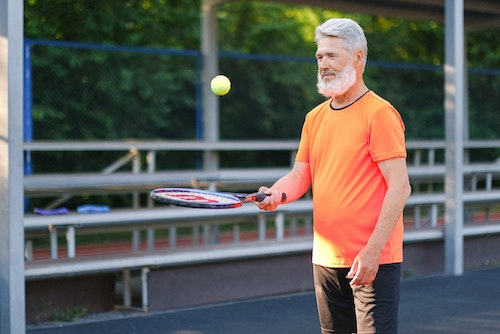
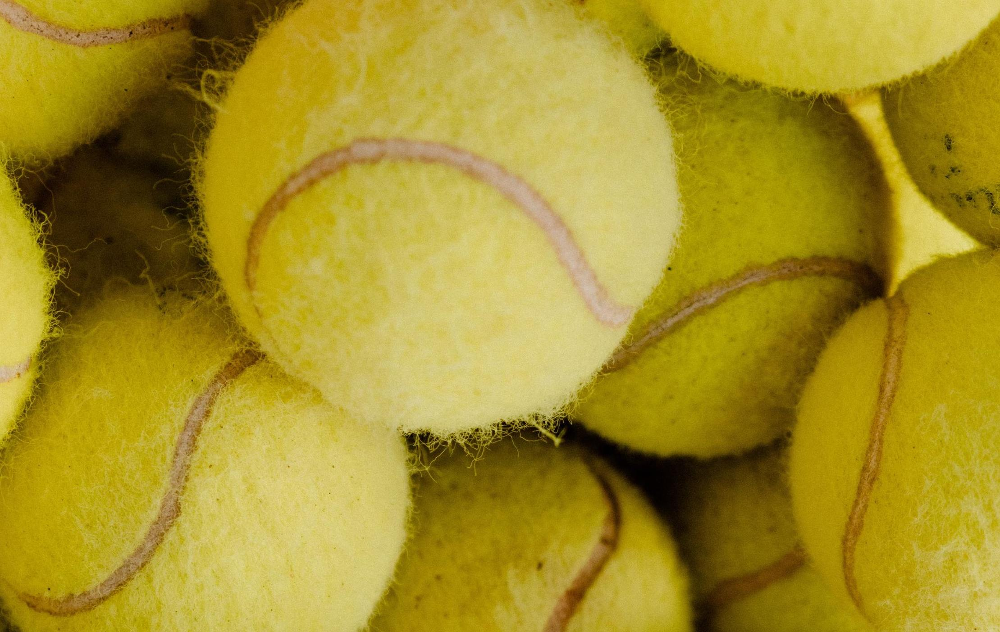

Tennis
How to Grip a Tennis Racket
- Hold the racket pointing away from you with one hand.
- Orient the string area perpendicular to the ground.
- Place the base knuckle of your index finger on the long flat side of the grip facing straight
out to
your right.
- Close your hand around the grip so that this same bevel of the grip goes diagonally across your
palm.
How to Shoot
- Stand with your feet behind the baseline and toss the tennis ball into the air.
- As the ball travels back down, you contact it pushing it over the net and diagonally into the
service box where your opponent is.
- Spend a lot of time practicing this crucial stroke.

Clothing and Gear
- Choose a Racket for your size with tight strings. Lightweight rackets would be preferable.
- Tension of the string would be high to hit the ball harder.
- Choose a hard surface to play such as the wooden floor courts.
- Wear white clothes (reputation of tennis) or whichever you are preferable to make you
comfortable
for playing.
